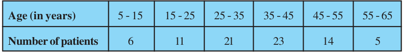
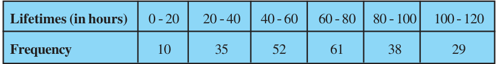
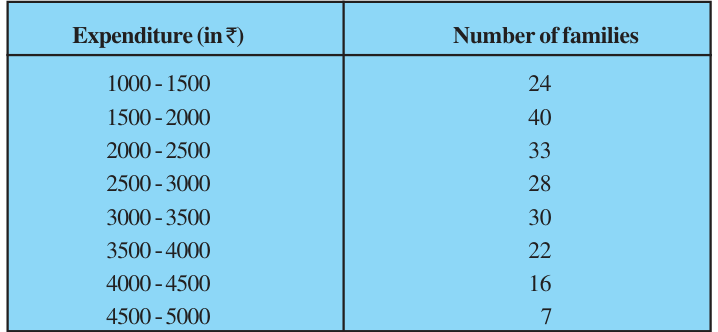
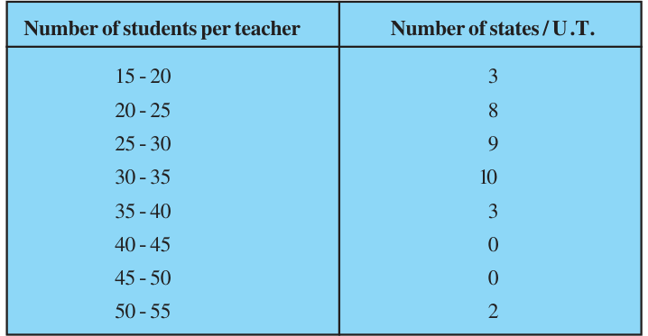
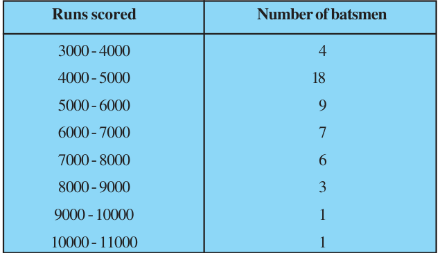
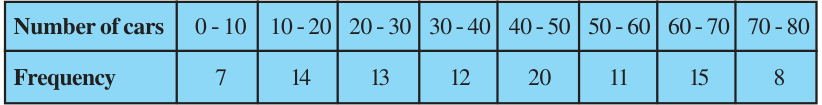

Find the mode and the mean of the data given above. Compare and interpret the two measures of central tendency.
- 2.The following data gives the information on the observed lifetimes (in hours) of 225
electrical components :

Determine the modal lifetimes of the components.
- 3.The following data gives the distribution of total monthly household expenditure of 200
families of a village. Find the modal monthly expenditure of the families. Also, find the mean monthly expenditure :

- 4.The following distribution gives the state-wise teacher-student ratio in higher
secondary schools of India. Find the mode and mean of this data. Interpret the two measures.

- 5.The given distribution shows the number of runs scored by some top batsmen of the
world in one-day international cricket matches.

Find the mode of the data.
- 6.A student noted the number of cars passing through a spot on a road for 100
periods each of 3 minutes and summarised it in the table given below. Find the mode of the data :
